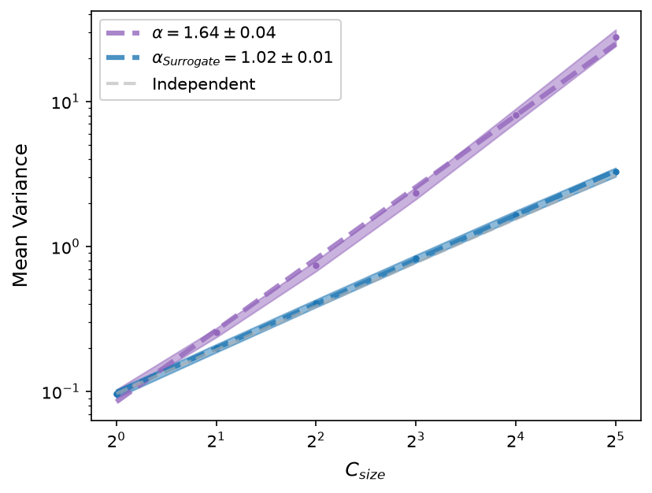
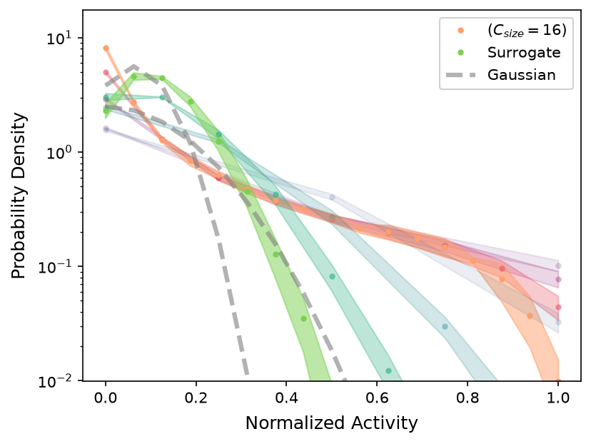
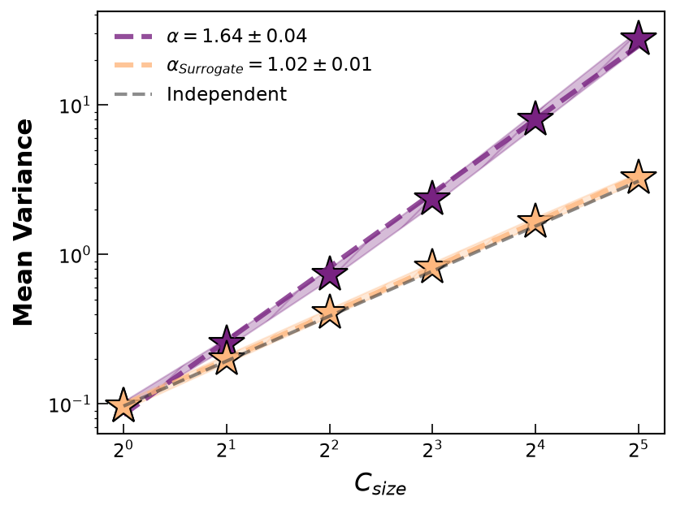
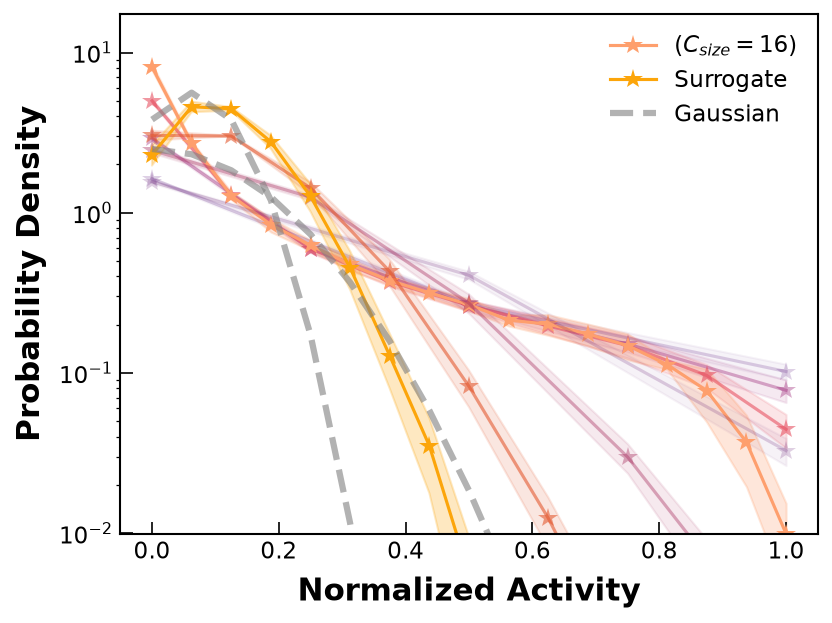

Styling your plots
The plotting functions in prg_toolbox.plot work out of the box
default settings, but visual details (colors, markers, fills, fonts, legend
placement) can be overridden. This page walks through both, using
example data so the difference is easy to see.
Two families of plots
The plotting functions split into two families, and each is colored differently:
- Single-curve plots --
plot_mean_variance,plot_log_silence_probability,plot_max_covariance_eigenvalue,plot_decay_time-- draw one line per dataset (data / surrogate / a trivial reference line), so they take acolorsargument: a dict with up to three keys,'data','surrogate', and'reference'. - Function-valued plots --
plot_covariance_spectrum,plot_autocorrelation_function,plot_activity_distribution-- draw one curve per coarse-graining step, so a single color isn't enough. They take apaletteargument instead: a colormap name (or dict with'data'and'surrogate'keys) that colors successive curves along a gradient.
Both arguments accept the same three shorthands:
colors = None # all defaults
colors = "seagreen" # only 'data' changes
colors = {"reference": "black"} # only 'reference' changes, rest stay default
colors = {"data": "green", "surrogate": "grey"} # any subset of keys
palette = None # all defaults
palette = "plasma" # only 'data' colormap changes
palette = {"surrogate": "cool"} # only 'surrogate' colormap changes
The data used
The examples below use 3 independent random 64-unit subsamples of simulated data of the model from Schmidt et al. (2018), alongside the same pipeline run on an ISI-shuffled surrogate (a null model that destroys temporal correlations while preserving each unit's firing rate):
import prg_toolbox as prg
from prg_toolbox.analysis_tools import pick_random_sample, shuffle_isi
path = prg.datasets.get_spike_data(files=["V4-5E"])
params = prg.config.AnalysisParams()
params.loading.data_format = "tabular"
params.rg_steps = 5
params.cluster_method = "pearson"
params.subsampling.samplesize = 64
params.subsampling.nsamples = 3
params.observables = [prg.mean_variance, prg.activity_distribution]
timestamps = prg.tools.load_data(path, user_params=params)
surrogate_timestamps = shuffle_isi(timestamps, data_format="tabular", random_seed=7)
data_result = prg.run_PRG(timestamps, user_params=params)
surrogate_result = prg.run_PRG(surrogate_timestamps, user_params=params)
mv_data, mv_surr = data_result["mean_variance"], surrogate_result["mean_variance"]
ad_data, ad_surr = data_result["activity_distribution"], surrogate_result["activity_distribution"]
Default style
import matplotlib.pyplot as plt
fig, ax = plt.subplots()
prg.plot.plot_mean_variance(mv_data, surrogate_data=mv_surr, ax=ax)

fig, ax = plt.subplots()
prg.plot.plot_activity_distribution(ad_data, surrogate_data=ad_surr, ax=ax)

Custom style
The examples below push a few kwargs hard on purpose -- star markers, exaggerated sizes, a hatch fill, bold labels -- just to make the visual effect of each one obvious.
prg.plot.plot_mean_variance(
mv_data,
surrogate_data=mv_surr,
ax=ax,
colors={"data": "#782281", "surrogate": "#feb77e", "reference": "#3f3f3f"},
plot_kwargs={"marker": "*", "markersize": 22, "markeredgewidth": 1.0, "markeredgecolor": "black"},
fill_kwargs={"alpha": 0.3, "hatch": "//"},
label_kwargs={"fontsize": 15, "fontweight": "bold"},
legend_kwargs={"fontsize": 11, "loc": "upper left", "frameon": False},
tick_kwargs={"labelsize": 11, "direction": "in", "length": 6},
)

prg.plot.plot_activity_distribution(
ad_data,
surrogate_data=ad_surr,
ax=ax,
palette={"data": "magma", "surrogate": "inferno"},
plot_kwargs={"marker": "*", "markersize": 10, "linestyle": "-", "linewidth": 1.5},
fill_kwargs={"alpha": 0.25},
label_kwargs={"fontsize": 15, "fontweight": "bold"},
legend_kwargs={"fontsize": 11, "loc": "upper right", "frameon": False},
tick_kwargs={"labelsize": 11, "direction": "in", "length": 6},
)

Kwargs cheatsheet
| Argument | Forwarded to | Controls |
|---|---|---|
colors / palette |
line/colormap color | which color(s) 'data', 'surrogate', 'reference' use |
plot_kwargs |
ax.plot |
marker, markersize, linewidth, linestyle, alpha, ... |
fill_kwargs |
ax.fill_between |
the std.-error band: alpha, hatch, ... |
label_kwargs |
ax.set_xlabel / ax.set_ylabel |
fontsize, fontweight, labelpad, ... |
legend_kwargs |
ax.legend |
loc, frameon, fontsize, ncol, ... |
tick_kwargs |
ax.tick_params |
labelsize, direction, length, ... |
Every one of these can also be set once via a shared PlotStyleConfig (or
the plot_style field of AnalysisParams) and passed as style_config=...,
instead of repeating them on every call -- see
Configuration. An explicit keyword argument always
wins over whatever the config object provides.